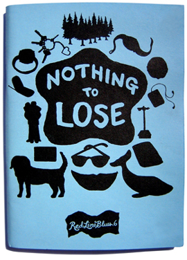

Available now in the online store.
Red Line Blues 6: Nothing To Lose
Summer 2008
96 pages
4.5" x 6.25"
Edition of 300
Ezra Post — Nothing
John Crutchfield — This Town
Gary Copeland Lilley — Mau-Mau From the 7th Ward Holds Court on the 4th of July
Albert Podell — Nothing to Lose?
Kenneth P. Becker — Earnings Record 1982–2006
Holly Iglesias — Chicken Hill, 1943/The Dead of Winter/Season of the Witch
Amanda Carella — Stoppages
Ben Yanes — In Defense of Big Plans/Christmas Afternoon
Lisa Freedman — Process of Elimination
Tim Cook — Olivia
Moriah Norris-Hale — Eclipse
Chall Gray — Lunch Poem, Wednesday, Rainy
Arielle Angel — 53rd Street and 5th Avenue, I Leave You My Pancreas
Erich Carter Nagler and Patricia Carter — Thirty-Six Years in Europe
E. Brennan Russell — The Edge of Sexuality
James Corrigan — Richard Wexler and the Unwelcome Visitor
Susan Amis — From Spyhouse Cafe on a Sunday